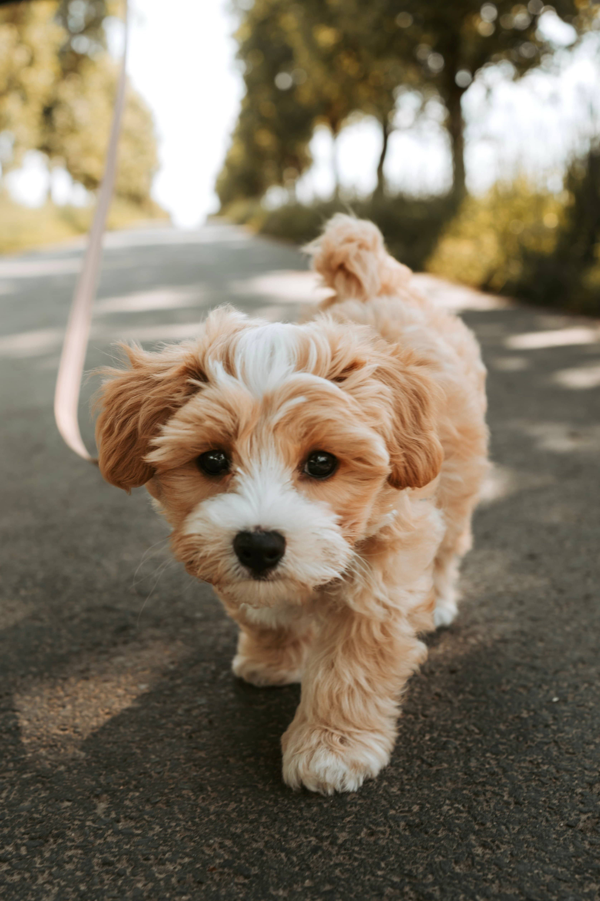
Luna
Rescatada de un criadero clandestino. Luna ha superado sus miedos y es muy cariñosa; busca una familia paciente que le enseñe lo que es el calor de un hogar verdadero.
Adoptar a LunaExplora nuestra familia de peluditos rescatados. Cada uno tiene una historia única de supervivencia y está esperando pacientemente una segunda oportunidad para llenar tu hogar de amor y alegría.

Rescatada de un criadero clandestino. Luna ha superado sus miedos y es muy cariñosa; busca una familia paciente que le enseñe lo que es el calor de un hogar verdadero.
Adoptar a Luna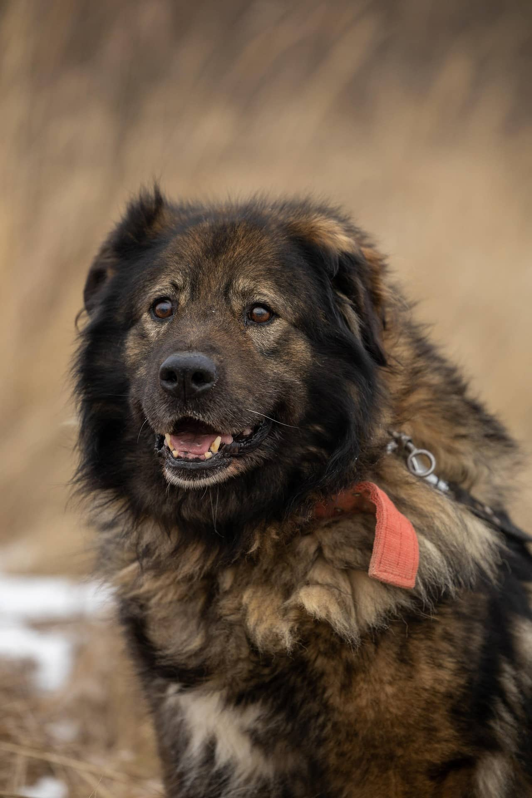
Abandonado atado a un poste. Tras completar con éxito su rehabilitación conductual, Max es un perro protector y brillante que anhela una familia activa.
Adoptar a Max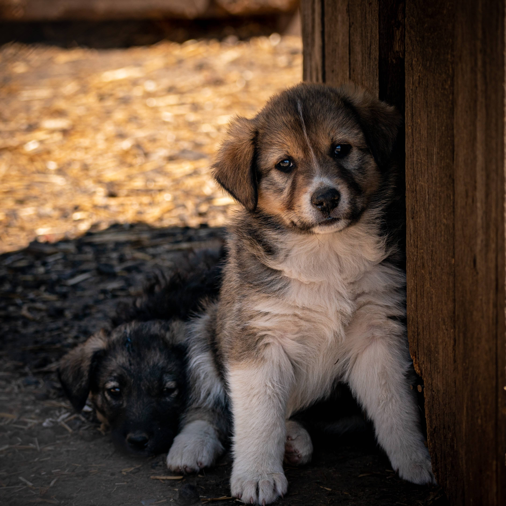
Tras el fallecimiento de su dueño terminó en el refugio. Rocky está deprimido y merece pasar sus años dorados en un sillón suave con compañía constante.
Adoptar a Rocky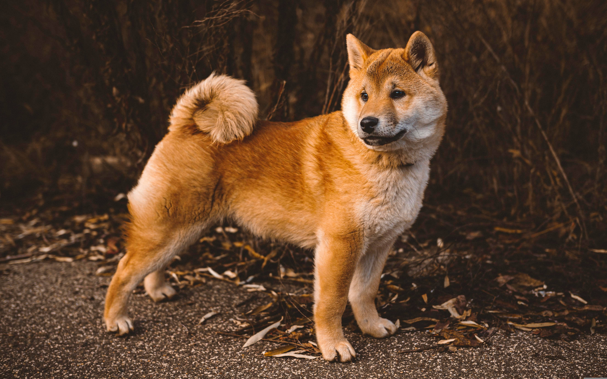
Rescatado de una zona industrial. Es un perrito joven, lleno de energía y sumamente sociable con otros perros. Le encantan las pelotas y los largos paseos.
Adoptar a Toby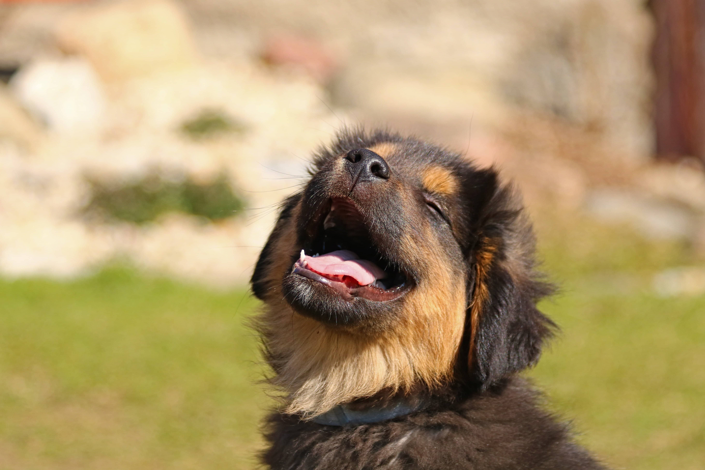
Vagaba por una carretera bajo la lluvia. Maya es una perrita tranquila y muy leal que busca un hogar donde se sienta protegida y amada por siempre.
Adoptar a Maya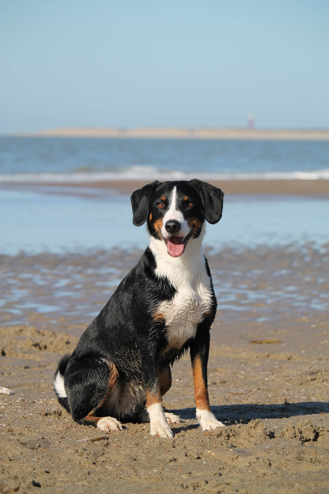
Bruno fue rescatado de condiciones de maltrato. A pesar de su pasado, es un gigante noble que solo quiere recostar su cabeza en tus rodillas.
Adoptar a Bruno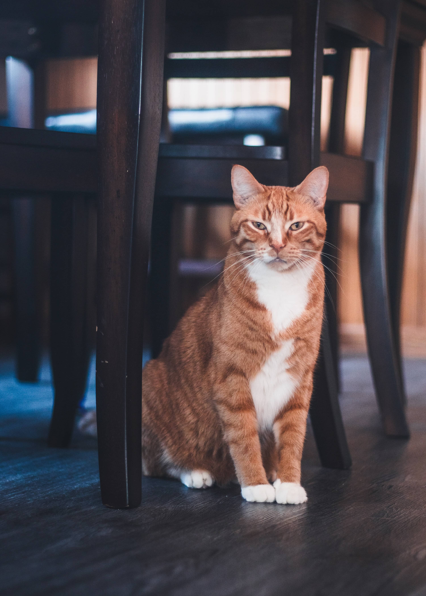
Encontrado en una caja bajo la lluvia. Tras meses de socialización, Milo ha florecido en un gatito dulce y agradecido que disfruta de largas siestas al sol.
Adoptar a Milo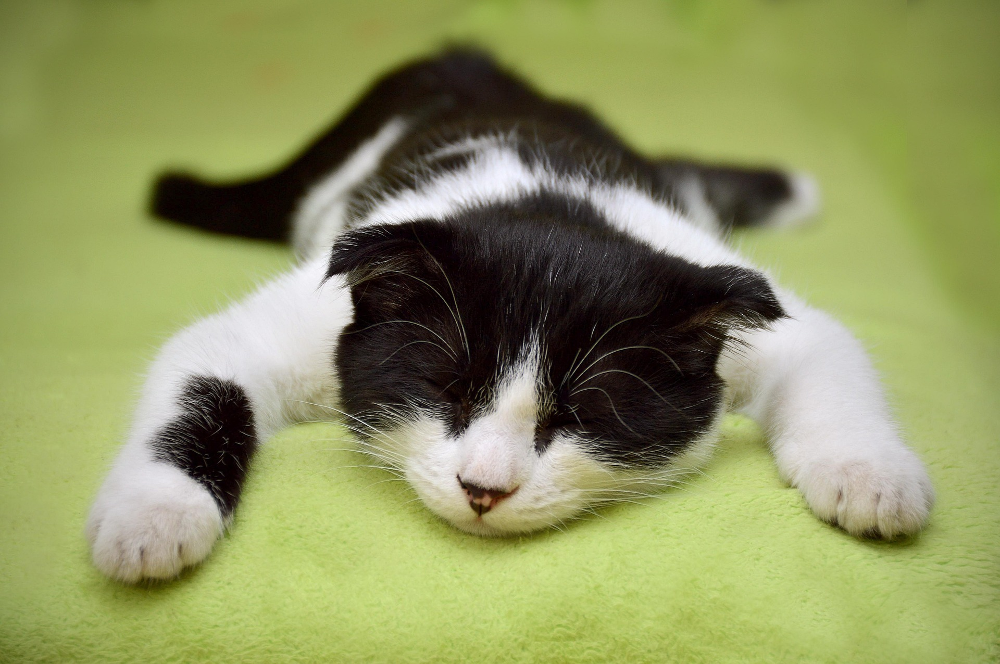
Rescatado de desnutrición severa. Hoy Oliver es un gato majestuoso y sumamente leal. Es el compañero perfecto y sereno para tardes de lectura.
Adoptar a Oliver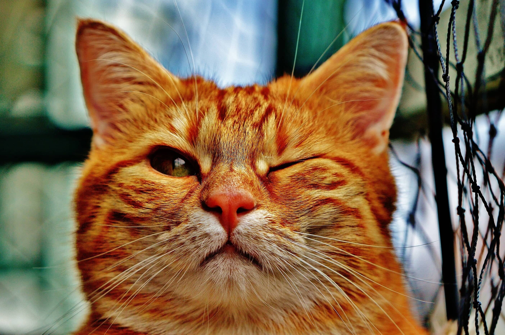
Único sobreviviente de su camada. Criado con biberón por voluntarios, ahora está sano y fuerte, listo para comenzar su nueva vida contigo.
Adoptar a Simba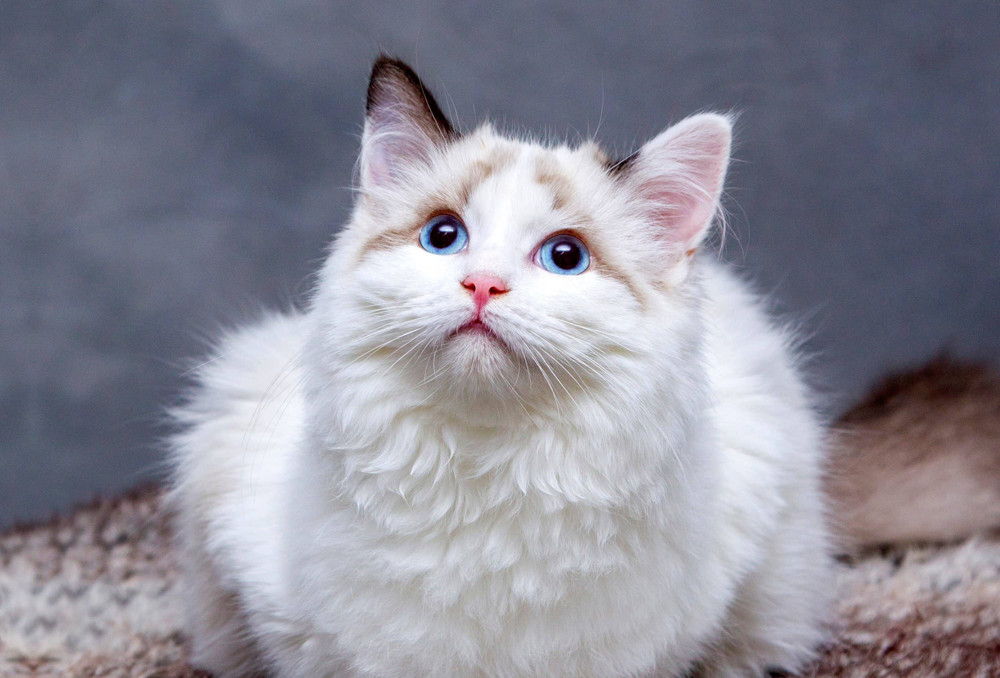
Rescatada de un tejado peligroso. Michi es una exploradora nata, llena de curiosidad y muy habladora; siempre tiene algo que contarte.
Adoptar a Michi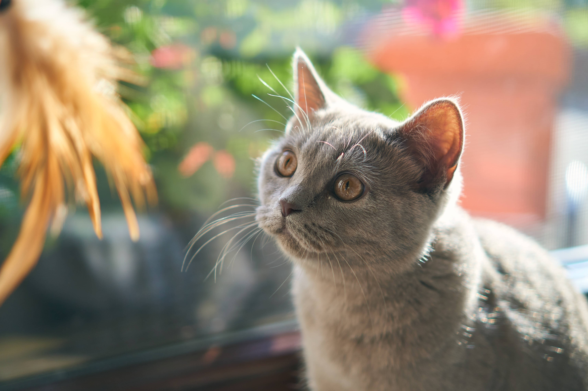
Salem es un gato negro elegante que fue abandonado por supersticiones injustas. Es el gato más dulce y ronroneador que conocerás.
Adoptar a Salem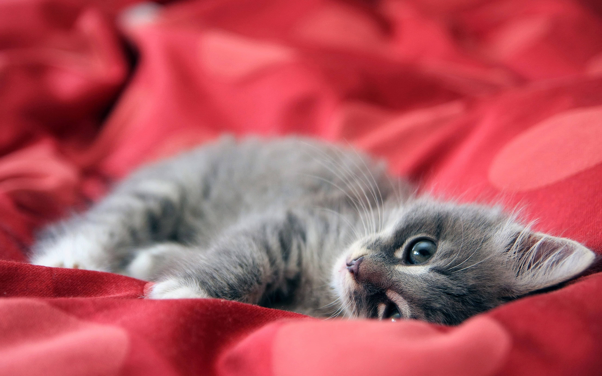
Perdió una patita en un accidente, pero su espíritu sigue intacto. Es muy ágil, cariñosa y busca una familia que vea más allá de su cicatriz.
Adoptar a Nala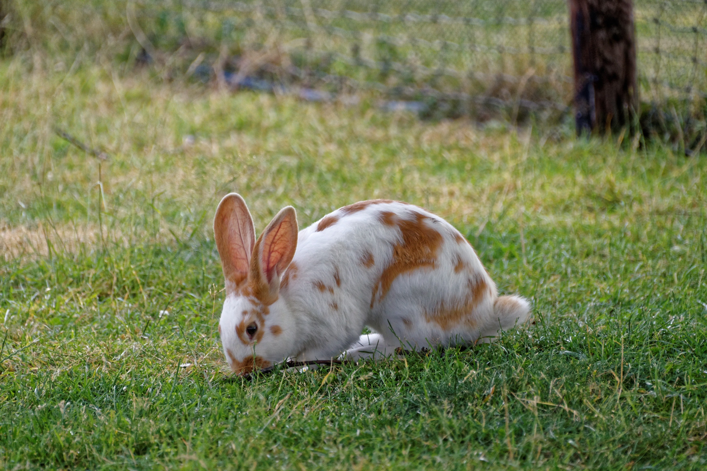
Rescatado de una feria local. BunBun es un conejo tranquilo que disfruta de las zanahorias frescas y de saltar libremente en espacios seguros.
Adoptar a BunBun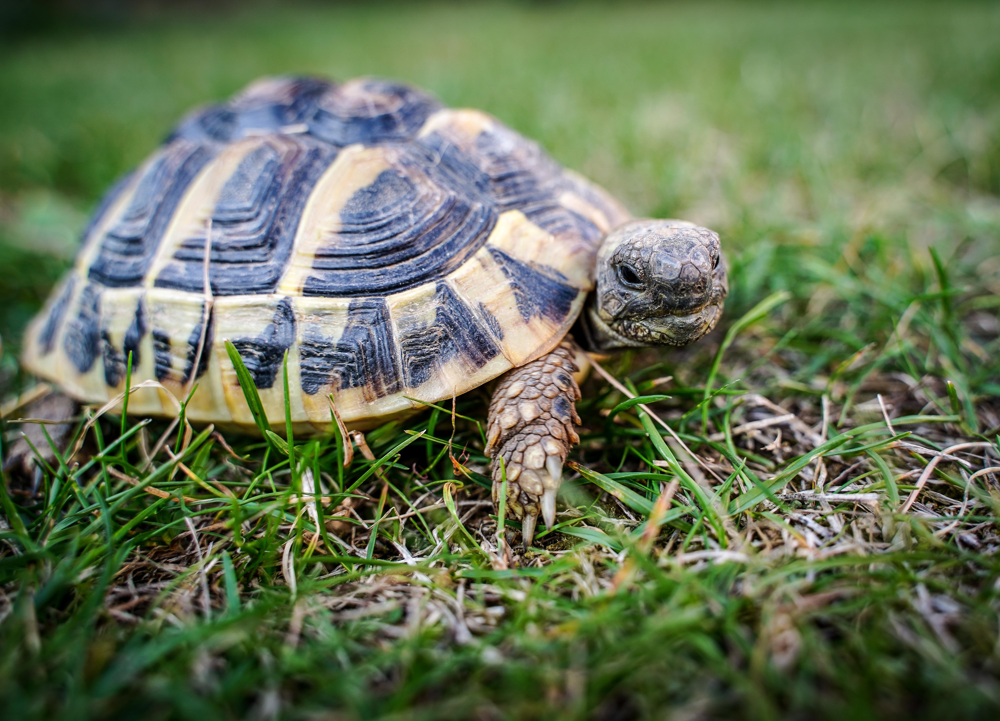
Rayo es una tortuga que fue abandonada en un parque. Es paciente, observadora y busca un hogar con un jardín soleado o un gran terrario.
Adoptar a Rayo